Code
library(tidyverse)
library(easystats)
library(brms)
library(flextable)
library(patchwork)library(tidyverse)
library(easystats)
library(brms)
library(flextable)
library(patchwork)# Deidentified features (one row per participant and task); see ../data/README.md
df_vocal <-
# base R's parser restores every stored value exactly (readr's can differ in the last digit)
read.csv(file.path("..", "data", "vocal.csv")) |>
as_tibble() |>
mutate(
participant = factor(participant),
source = factor(source, levels = c("clinic", "prolific")),
ptsd = factor(ptsd, levels = c(0, 1)),
demo_sex = factor(demo_sex, levels = c("Male", "Female")),
demo_nonwhite = factor(demo_nonwhite, levels = c(FALSE, TRUE)),
task = factor(task, levels = c("Account", "Impact"))
) |>
arrange(participant, task)
# Effect-code every two-level factor (first level = -0.5, second = +0.5) so each main effect is averaged
# over the other factors (e.g., group = PTSD - Control averaged across tasks); interactions and predictions are unchanged
for (v in c("task", "ptsd", "demo_sex", "demo_nonwhite")) contrasts(df_vocal[[v]]) <- c(-0.5, 0.5)
dir.create("fits", showWarnings = FALSE)
# High-ICC models whose between-person (group) coefficient mixed slowly at 4000 iterations
long_run <- c("CPPS", "H1H2", "M_Voiced", "SD_Voiced", "PoseX", "AU15")
df_vocal |>
select(SD_Loudness:H1H2) |>
pivot_longer(cols = everything()) |>
ggplot(aes(x = value)) +
facet_wrap(~name, scales = "free") +
geom_histogram(bins = 30)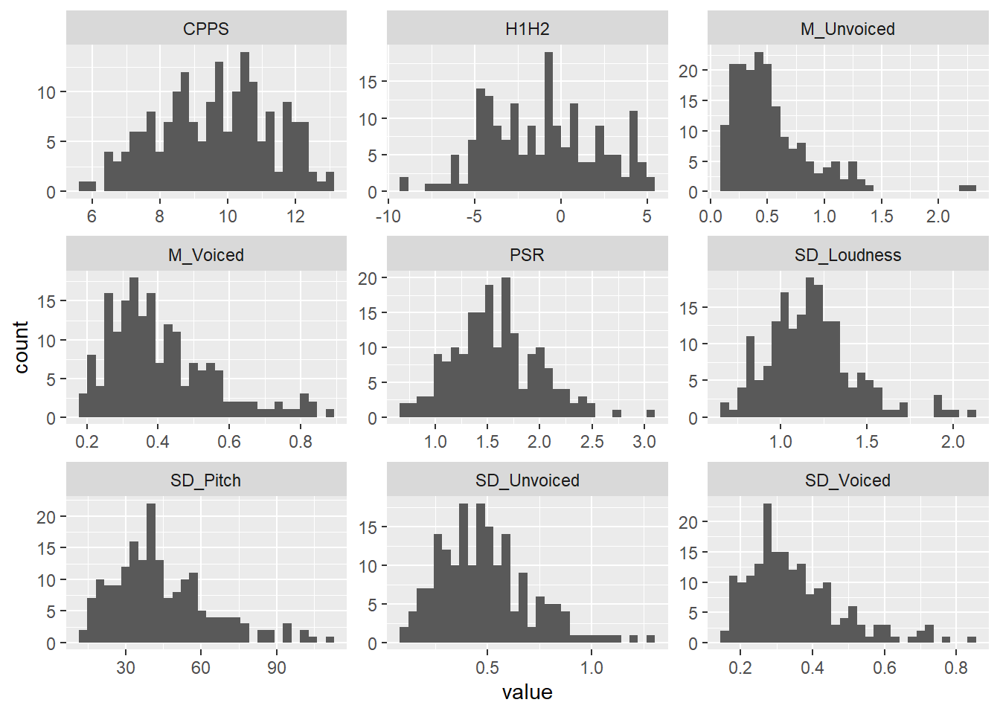
gaussian_features <- c("CPPS", "H1H2")
gaussian_models <-
gaussian_features |>
set_names() |>
map(
\(feature) {
model_formula <- as.formula(
paste(feature, "~ task * ptsd + demo_age + demo_sex + demo_nonwhite + (1 | participant)")
)
brm(
formula = model_formula,
data = df_vocal,
prior = set_prior("normal(0, 1)", class = "b"),
seed = 2026,
chains = 4,
cores = 4,
iter = if (feature %in% long_run) 8000 else 4000,
warmup = 2000,
refresh = 0,
file = file.path("fits", feature),
control = list(adapt_delta = 0.95, max_treedepth = 12),
backend = "cmdstanr"
)
}
)
iwalk(
gaussian_models,
\(model, name) {
thisr2 <- r2(model)
cat(
"\n\n#### ",
name,
sprintf("(R2C = %0.2f, R2M = %0.2f)", thisr2$R2_Bayes, thisr2$R2_Bayes_marginal),
"\n\n"
)
table_md <- print_md(model_parameters(model))
cat(table_md, sep = "\n")
}
)| Parameter | Median | 95% CI | pd | Rhat | ESS (tail) |
|---|---|---|---|---|---|
| (Intercept) | 10.66 | (9.52, 11.75) | 100% | 1.004 | 1024 |
| task1 | -0.12 | (-0.21, -0.03) | 99.45% | 1.000 | 13482 |
| ptsd1 | -0.57 | (-1.27, 0.17) | 93.41% | 1.002 | 1731 |
| demo_age | -0.02 | (-0.05, 2.64e-03) | 96.28% | 1.002 | 1303 |
| demo_sex1 | 0.80 | (0.07, 1.53) | 98.39% | 1.005 | 1538 |
| demo_nonwhite1 | 0.53 | (-0.35, 1.36) | 89.15% | 1.005 | 1680 |
| task1:ptsd1 | -0.03 | (-0.21, 0.15) | 62.64% | 1.000 | 13062 |
| Parameter | Median | 95% CI | pd | Rhat | ESS (tail) |
|---|---|---|---|---|---|
| sigma | 0.31 | (0.27, 0.36) | 100% | 1.001 | 11774 |
| Parameter | Median | 95% CI | pd | Rhat | ESS (tail) |
|---|---|---|---|---|---|
| (Intercept) | -3.00 | (-4.95, -1.14) | 99.88% | 1.003 | 1999 |
| task1 | 0.08 | (-0.09, 0.25) | 82.98% | 1.000 | 14417 |
| ptsd1 | -1.01 | (-2.09, 0.11) | 96.20% | 1.006 | 2302 |
| demo_age | 0.05 | (4.83e-03, 0.09) | 98.50% | 1.003 | 1988 |
| demo_sex1 | -1.52 | (-2.62, -0.37) | 99.62% | 1.008 | 2490 |
| demo_nonwhite1 | -0.54 | (-1.78, 0.74) | 79.32% | 1.001 | 2955 |
| task1:ptsd1 | -0.64 | (-0.96, -0.31) | 99.99% | 1.000 | 14993 |
| Parameter | Median | 95% CI | pd | Rhat | ESS (tail) |
|---|---|---|---|---|---|
| sigma | 0.57 | (0.49, 0.66) | 100% | 1.000 | 10503 |
lognormal_features <- c("SD_Loudness", "SD_Pitch", "PSR", "M_Voiced",
"M_Unvoiced", "SD_Voiced", "SD_Unvoiced")
lognormal_models <-
lognormal_features |>
set_names() |>
map(
\(feature) {
model_formula <- as.formula(
paste(feature, "~ task * ptsd + demo_age + demo_sex + demo_nonwhite + (1 | participant)")
)
brm(
formula = model_formula,
data = df_vocal,
family = lognormal(),
prior = set_prior("normal(0, 1)", class = "b"),
seed = 2026,
chains = 4,
cores = 4,
iter = if (feature %in% long_run) 8000 else 4000,
warmup = 2000,
refresh = 0,
file = file.path("fits", feature),
control = list(adapt_delta = 0.95, max_treedepth = 12),
backend = "cmdstanr"
)
}
)
iwalk(
lognormal_models,
\(model, name) {
thisr2 <- r2(model)
cat(
"\n\n#### ",
name,
sprintf("(R2C = %0.2f, R2M = %0.2f)", thisr2$R2_Bayes, thisr2$R2_Bayes_marginal),
"\n\n"
)
table_md <- print_md(model_parameters(model))
cat(table_md, sep = "\n")
}
)| Parameter | Median | 95% CI | pd | Rhat | ESS (tail) |
|---|---|---|---|---|---|
| (Intercept) | 0.12 | (-0.02, 0.24) | 95.70% | 1.003 | 4856 |
| task1 | 0.09 | (0.06, 0.12) | 100% | 1.000 | 5832 |
| ptsd1 | 0.08 | (-0.02, 0.18) | 94.64% | 1.001 | 4369 |
| demo_age | 3.00e-05 | (-2.95e-03, 3.03e-03) | 50.59% | 1.002 | 4751 |
| demo_sex1 | 0.05 | (-0.04, 0.15) | 88.11% | 1.000 | 4341 |
| demo_nonwhite1 | -0.04 | (-0.15, 0.07) | 77.49% | 1.000 | 4511 |
| task1:ptsd1 | -0.06 | (-0.13, 4.54e-03) | 96.62% | 1.001 | 5182 |
| Parameter | Median | 95% CI | pd | Rhat | ESS (tail) |
|---|---|---|---|---|---|
| sigma | 0.12 | (0.10, 0.14) | 100% | 1.001 | 5062 |
| Parameter | Median | 95% CI | pd | Rhat | ESS (tail) |
|---|---|---|---|---|---|
| (Intercept) | 3.80 | (3.54, 4.06) | 100% | 1.004 | 2192 |
| task1 | 5.40e-03 | (-0.03, 0.04) | 60.24% | 1.001 | 6143 |
| ptsd1 | 0.15 | (-0.03, 0.34) | 95.36% | 1.003 | 1953 |
| demo_age | -4.00e-03 | (-9.92e-03, 1.87e-03) | 90.61% | 1.005 | 2162 |
| demo_sex1 | 0.39 | (0.21, 0.57) | 100% | 1.003 | 2020 |
| demo_nonwhite1 | -8.47e-03 | (-0.21, 0.21) | 53.02% | 1.007 | 2189 |
| task1:ptsd1 | 0.04 | (-0.04, 0.12) | 82.26% | 1.000 | 6166 |
| Parameter | Median | 95% CI | pd | Rhat | ESS (tail) |
|---|---|---|---|---|---|
| sigma | 0.14 | (0.12, 0.16) | 100% | 1.000 | 4935 |
| Parameter | Median | 95% CI | pd | Rhat | ESS (tail) |
|---|---|---|---|---|---|
| (Intercept) | 0.44 | (0.26, 0.62) | 100% | 1.004 | 1932 |
| task1 | -0.03 | (-0.06, 2.41e-03) | 96.28% | 1.000 | 6126 |
| ptsd1 | -0.03 | (-0.16, 0.09) | 66.75% | 1.003 | 2214 |
| demo_age | 5.60e-04 | (-3.85e-03, 4.55e-03) | 60.08% | 1.003 | 2054 |
| demo_sex1 | -0.02 | (-0.15, 0.11) | 61.79% | 1.001 | 1477 |
| demo_nonwhite1 | 0.08 | (-0.07, 0.24) | 85.30% | 1.009 | 1928 |
| task1:ptsd1 | 0.04 | (-0.02, 0.10) | 92.54% | 1.001 | 6196 |
| Parameter | Median | 95% CI | pd | Rhat | ESS (tail) |
|---|---|---|---|---|---|
| sigma | 0.10 | (0.09, 0.12) | 100% | 1.001 | 4911 |
| Parameter | Median | 95% CI | pd | Rhat | ESS (tail) |
|---|---|---|---|---|---|
| (Intercept) | -0.94 | (-1.18, -0.69) | 100% | 1.004 | 2684 |
| task1 | -0.04 | (-0.06, -0.02) | 100% | 1.000 | 14333 |
| ptsd1 | -0.08 | (-0.26, 0.09) | 80.71% | 1.001 | 2447 |
| demo_age | -1.14e-04 | (-5.71e-03, 5.38e-03) | 51.60% | 1.003 | 2736 |
| demo_sex1 | -0.06 | (-0.24, 0.11) | 77.29% | 1.004 | 2631 |
| demo_nonwhite1 | 1.67e-03 | (-0.20, 0.20) | 50.70% | 1.007 | 2856 |
| task1:ptsd1 | 1.64e-03 | (-0.04, 0.05) | 52.92% | 1.000 | 14552 |
| Parameter | Median | 95% CI | pd | Rhat | ESS (tail) |
|---|---|---|---|---|---|
| sigma | 0.08 | (0.07, 0.09) | 100% | 1.000 | 11793 |
| Parameter | Median | 95% CI | pd | Rhat | ESS (tail) |
|---|---|---|---|---|---|
| (Intercept) | -0.72 | (-1.08, -0.36) | 100% | 1.001 | 5188 |
| task1 | 0.18 | (0.05, 0.30) | 99.75% | 1.002 | 6469 |
| ptsd1 | 0.12 | (-0.15, 0.37) | 81.23% | 1.001 | 4724 |
| demo_age | -5.05e-03 | (-0.01, 3.21e-03) | 88.88% | 1.001 | 5248 |
| demo_sex1 | 0.21 | (-0.05, 0.46) | 94.49% | 1.001 | 4473 |
| demo_nonwhite1 | -0.23 | (-0.52, 0.08) | 92.76% | 1.001 | 5079 |
| task1:ptsd1 | -0.15 | (-0.40, 0.11) | 87.71% | 1.000 | 5903 |
| Parameter | Median | 95% CI | pd | Rhat | ESS (tail) |
|---|---|---|---|---|---|
| sigma | 0.44 | (0.38, 0.51) | 100% | 1.001 | 5045 |
| Parameter | Median | 95% CI | pd | Rhat | ESS (tail) |
|---|---|---|---|---|---|
| (Intercept) | -1.08 | (-1.32, -0.84) | 100% | 1.003 | 2904 |
| task1 | -0.05 | (-0.08, -0.03) | 99.97% | 1.000 | 15220 |
| ptsd1 | -0.05 | (-0.22, 0.12) | 71.23% | 1.002 | 2872 |
| demo_age | -2.20e-04 | (-5.64e-03, 5.36e-03) | 53.24% | 1.004 | 2641 |
| demo_sex1 | -0.15 | (-0.33, 8.12e-03) | 96.88% | 1.005 | 2788 |
| demo_nonwhite1 | 6.00e-04 | (-0.20, 0.21) | 50.24% | 1.003 | 2511 |
| task1:ptsd1 | 8.42e-04 | (-0.05, 0.05) | 51.43% | 1.000 | 15512 |
| Parameter | Median | 95% CI | pd | Rhat | ESS (tail) |
|---|---|---|---|---|---|
| sigma | 0.08 | (0.07, 0.10) | 100% | 1.000 | 12441 |
| Parameter | Median | 95% CI | pd | Rhat | ESS (tail) |
|---|---|---|---|---|---|
| (Intercept) | -0.86 | (-1.15, -0.56) | 100% | 1.001 | 3844 |
| task1 | 0.25 | (0.18, 0.33) | 100% | 1.001 | 4984 |
| ptsd1 | 0.18 | (-0.03, 0.39) | 95.36% | 1.001 | 4488 |
| demo_age | -1.22e-03 | (-8.01e-03, 5.28e-03) | 64.10% | 1.001 | 3502 |
| demo_sex1 | 0.15 | (-0.05, 0.35) | 92.73% | 1.001 | 3762 |
| demo_nonwhite1 | -0.17 | (-0.41, 0.07) | 91.38% | 1.002 | 4686 |
| task1:ptsd1 | -0.23 | (-0.38, -0.08) | 99.91% | 1.001 | 5507 |
| Parameter | Median | 95% CI | pd | Rhat | ESS (tail) |
|---|---|---|---|---|---|
| sigma | 0.25 | (0.22, 0.29) | 100% | 1.001 | 4773 |
all_models <- c(gaussian_models, lognormal_models)
extract_model_stats <- function(model, model_name) {
describe_posterior(model, effects = "fixed", component = "conditional", test = "pd") |>
as_tibble() |>
filter(str_detect(Parameter, "task|ptsd")) |>
mutate(
stars = case_when(
pd >= 0.995 ~ "***",
pd >= 0.985 ~ "**",
pd >= 0.975 ~ "*",
TRUE ~ ""
),
formatted_stat = sprintf("%.2f [%.2f, %.2f]%s", Median, CI_low, CI_high, stars),
Term = case_when(
str_detect(Parameter, ":") ~ "Interaction",
str_detect(Parameter, "task") ~ "Main_Task",
str_detect(Parameter, "ptsd") ~ "Main_PTSD",
TRUE ~ Parameter
)
) |>
select(Term, formatted_stat) |>
pivot_wider(names_from = Term, values_from = formatted_stat) |>
mutate(Feature = model_name, .before = 1)
}
table_data <- imap(all_models, \(model, name) extract_model_stats(model, name)) |>
list_rbind()
final_table <-
flextable(table_data) |>
set_header_labels(
Feature = "Feature",
Main_Task = "Main Effect: Task",
Main_PTSD = "Main Effect: PTSD",
Interaction = "Task × PTSD Effect"
) |>
autofit() |>
add_footer_lines("Note: Estimates are median posterior values on the link scale (identity, log, or logit). Models control for age, sex, and race. Brackets indicate 95% Credible Intervals. * pd > 97.5%, ** pd > 98.5%, *** pd > 99.5%. ")
final_tableFeature | Main Effect: Task | Main Effect: PTSD | Task × PTSD Effect |
|---|---|---|---|
CPPS | -0.12 [-0.21, -0.03]** | -0.57 [-1.27, 0.17] | -0.03 [-0.21, 0.15] |
H1H2 | 0.08 [-0.09, 0.25] | -1.01 [-2.09, 0.11] | -0.64 [-0.96, -0.31]*** |
SD_Loudness | 0.09 [0.06, 0.12]*** | 0.08 [-0.02, 0.18] | -0.06 [-0.13, 0.00] |
SD_Pitch | 0.01 [-0.03, 0.04] | 0.15 [-0.03, 0.34] | 0.04 [-0.04, 0.12] |
PSR | -0.03 [-0.06, 0.00] | -0.03 [-0.16, 0.09] | 0.04 [-0.02, 0.10] |
M_Voiced | -0.04 [-0.06, -0.02]*** | -0.08 [-0.26, 0.09] | 0.00 [-0.04, 0.05] |
M_Unvoiced | 0.18 [0.05, 0.30]*** | 0.12 [-0.15, 0.37] | -0.15 [-0.40, 0.11] |
SD_Voiced | -0.05 [-0.08, -0.03]*** | -0.05 [-0.22, 0.12] | 0.00 [-0.05, 0.05] |
SD_Unvoiced | 0.25 [0.18, 0.33]*** | 0.18 [-0.03, 0.39] | -0.23 [-0.38, -0.08]*** |
Note: Estimates are median posterior values on the link scale (identity, log, or logit). Models control for age, sex, and race. Brackets indicate 95% Credible Intervals. * pd > 97.5%, ** pd > 98.5%, *** pd > 99.5%. | |||
# Simple group effects (PTSD - Control) within each task on the response scale,
# averaged over sex and race (equal weights, matching the effect coding) at the
# mean age, with random intercepts at zero
extract_group_deltas <- function(model, model_name) {
ec <- estimate_contrasts(model, contrast = "ptsd", by = "task", re_formula = NA) |>
as.data.frame()
stopifnot(all(ec$Level1 == "1" & ec$Level2 == "0")) # PTSD minus Control
ec |>
transmute(
Feature = model_name,
Task = as.character(task),
Estimate = Median,
CI_Low = CI_low,
CI_High = CI_high,
pd
)
}
group_delta_results <- imap(all_models, \(model, name) {
extract_group_deltas(model, name)
}) |> list_rbind()
group_delta_table <-
group_delta_results |>
mutate(Feature = gsub("_", " ", Feature)) |>
flextable() |>
colformat_double(
j = c("Estimate", "CI_Low", "CI_High"),
digits = 3
) |>
colformat_double(
j = "pd",
digits = 3
) |>
set_header_labels(
Feature = "Feature",
Task = "Task",
Estimate = "PTSD Δ", # PTSD minus Control
CI_Low = "Lower 95% CI",
CI_High = "Upper 95% CI",
pd = "pd"
) |>
autofit() |>
italic(j = "pd", part = "header") |>
bold(i = ~ pd > 0.975, j = c("Estimate", "pd")) |>
add_footer_lines("Note: PTSD Δ is the estimated difference (PTSD - Control) on the response scale, averaged over sex and race at the mean age. pd = Probability of Direction. Bold rows indicate pd > 0.975.")
group_delta_tableFeature | Task | PTSD Δ | Lower 95% CI | Upper 95% CI | pd |
|---|---|---|---|---|---|
CPPS | Account | -0.558 | -1.259 | 0.190 | 0.928 |
CPPS | Impact | -0.588 | -1.287 | 0.169 | 0.936 |
H1H2 | Account | -0.688 | -1.781 | 0.445 | 0.887 |
H1H2 | Impact | -1.331 | -2.422 | -0.204 | 0.989 |
SD Loudness | Account | 0.118 | 0.007 | 0.229 | 0.982 |
SD Loudness | Impact | 0.053 | -0.063 | 0.180 | 0.814 |
SD Pitch | Account | 5.314 | -2.025 | 12.870 | 0.923 |
SD Pitch | Impact | 6.784 | -0.547 | 14.476 | 0.965 |
PSR | Account | -0.081 | -0.293 | 0.125 | 0.769 |
PSR | Impact | -0.013 | -0.220 | 0.190 | 0.546 |
M Voiced | Account | -0.030 | -0.103 | 0.039 | 0.807 |
M Voiced | Impact | -0.028 | -0.099 | 0.037 | 0.801 |
M Unvoiced | Account | 0.077 | -0.038 | 0.201 | 0.907 |
M Unvoiced | Impact | 0.020 | -0.122 | 0.164 | 0.604 |
SD Voiced | Account | -0.018 | -0.078 | 0.044 | 0.710 |
SD Voiced | Impact | -0.016 | -0.074 | 0.042 | 0.711 |
SD Unvoiced | Account | 0.110 | 0.025 | 0.198 | 0.995 |
SD Unvoiced | Impact | 0.031 | -0.076 | 0.140 | 0.721 |
Note: PTSD Δ is the estimated difference (PTSD - Control) on the response scale, averaged over sex and race at the mean age. pd = Probability of Direction. Bold rows indicate pd > 0.975. | |||||
plot_titles <- c(
"CPPS: Voice clarity (dB)",
"H1−H2: Breathiness (dB)",
"Loudness: Variability (SD)",
"Pitch: Variability (Hz)",
"Speech rate (segments/s)",
"Voiced: Mean length (s)",
"Unvoiced: Mean length (s)",
"Voiced: Length SD (s)",
"Unvoiced: Length SD (s)"
)
# Plot the simple group effects from the table above: PTSD minus Control within
# each task, with 95% credible intervals; filled points have pd > 97.5%
make_model_plot <- function(name, title) {
d <- group_delta_results |>
filter(Feature == name) |>
mutate(
Task = factor(Task, levels = c("Account", "Impact")),
credible = factor(pd > 0.975, levels = c(FALSE, TRUE), labels = c("No", "Yes"))
)
ggplot(d, aes(x = Task, y = Estimate, group = 1)) +
geom_hline(yintercept = 0, linetype = "dashed", color = "grey50") +
geom_line(color = "grey40") +
geom_pointrange(
aes(ymin = CI_Low, ymax = CI_High, fill = credible),
shape = 21, size = 0.4, color = "grey20", show.legend = TRUE
) +
scale_fill_manual(values = c(No = "white", Yes = "black"), limits = c("No", "Yes"), drop = FALSE) +
# typographic minus signs on the y-axis (Cairo otherwise draws a hyphen)
scale_y_continuous(labels = \(x) sub("^-", "\u2212", format(x, trim = TRUE))) +
labs(title = title, x = NULL, y = "PTSD − Control Difference (95% CI)", fill = "pd > 97.5%") +
theme_minimal(base_size = 8) +
theme(
plot.title = element_text(size = 9, face = "bold"),
axis.text.x = element_text(size = 8),
panel.grid.minor = element_blank(),
panel.grid.major.x = element_blank()
)
}
plot_list <- map2(names(all_models), plot_titles, make_model_plot)
combined_plot <- wrap_plots(plot_list, ncol = 3) +
plot_layout(guides = "collect", axis_titles = "collect") &
theme(legend.position = "bottom")
combined_plot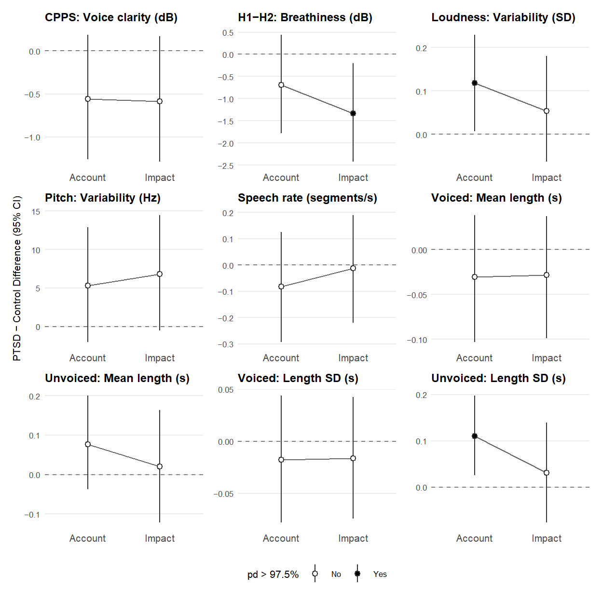
# Cairo embeds fonts and renders hyphens and minus signs correctly
ggsave("vocal.pdf", width = 6.5, height = 6.5, units = "in", device = cairo_pdf)
ggsave("vocal.png", width = 6.5, height = 6.5, units = "in", dpi = 600, device = ragg::agg_png, bg = "white")walk(all_models, \(x) print(check_predictions(x, type = "density", allow_new_levels = TRUE)))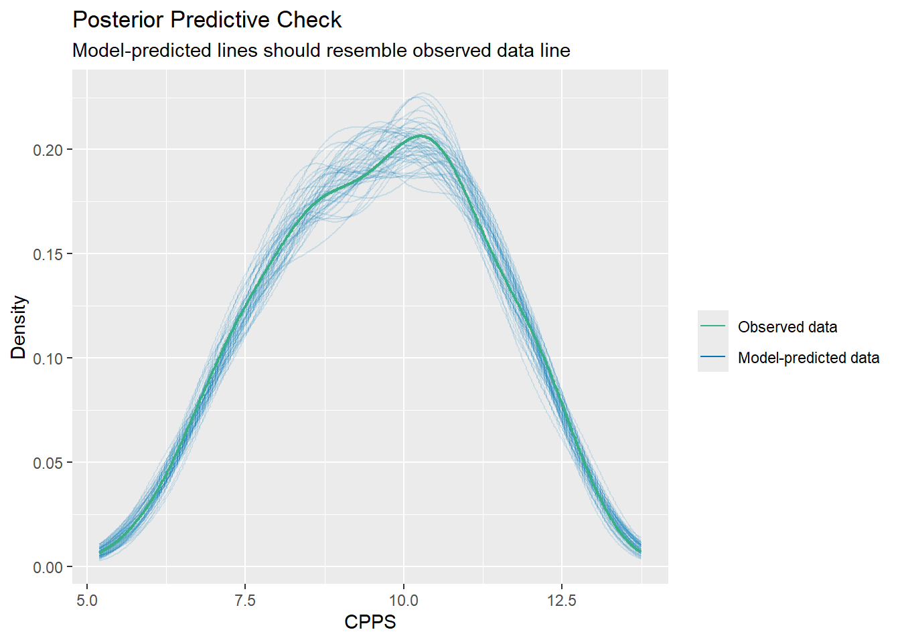
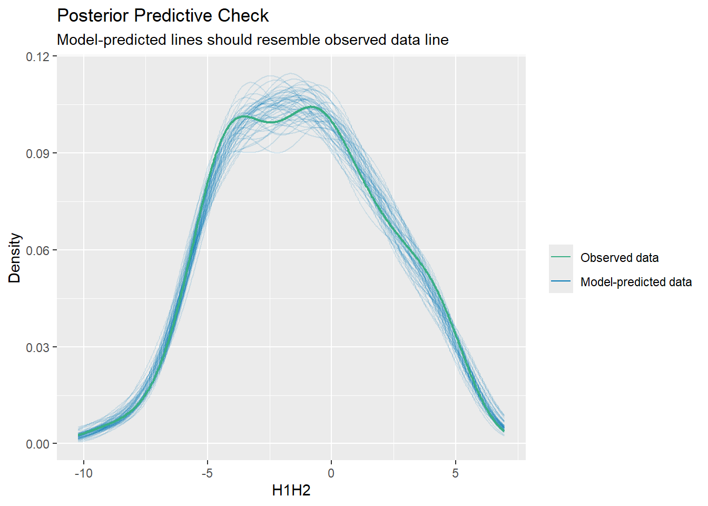
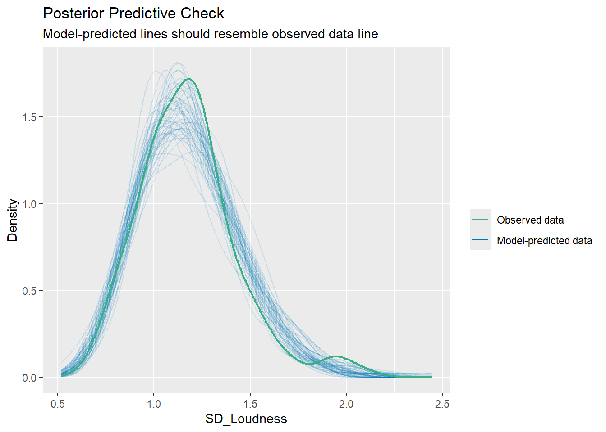
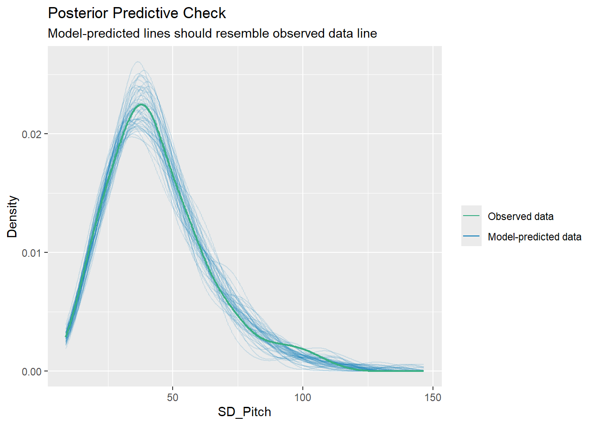
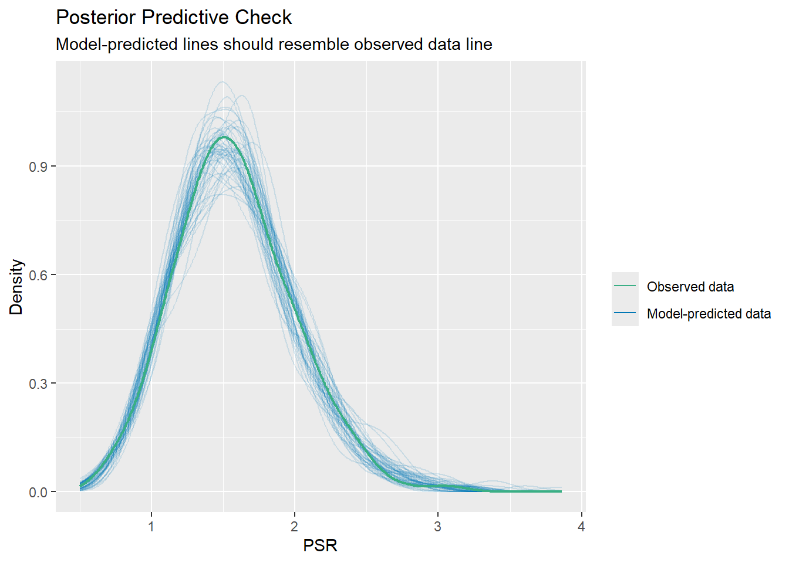
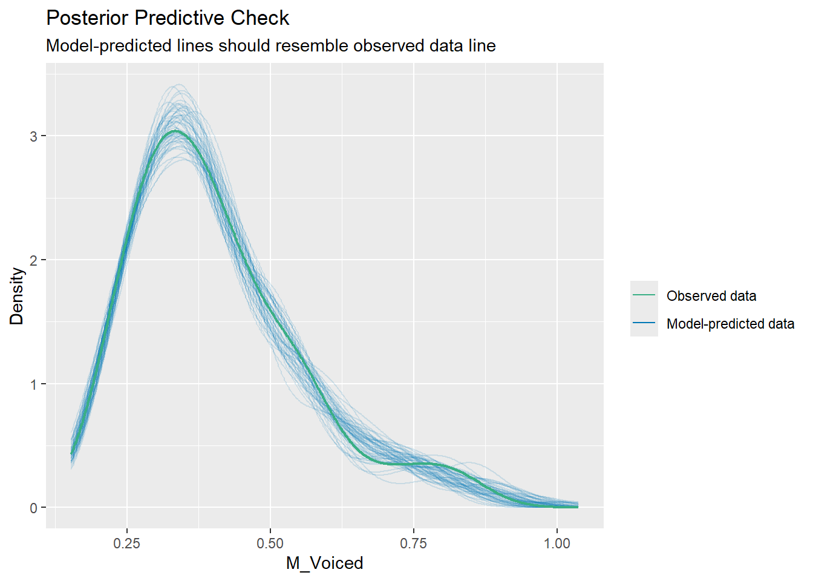
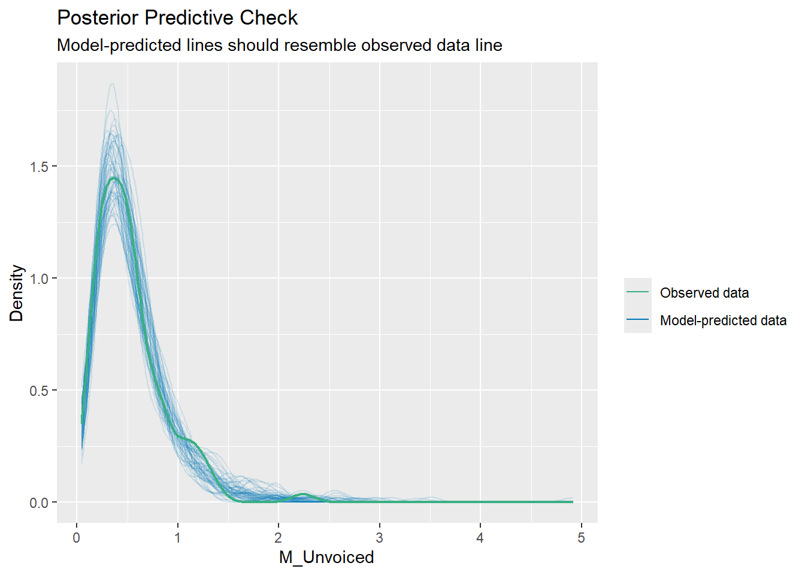
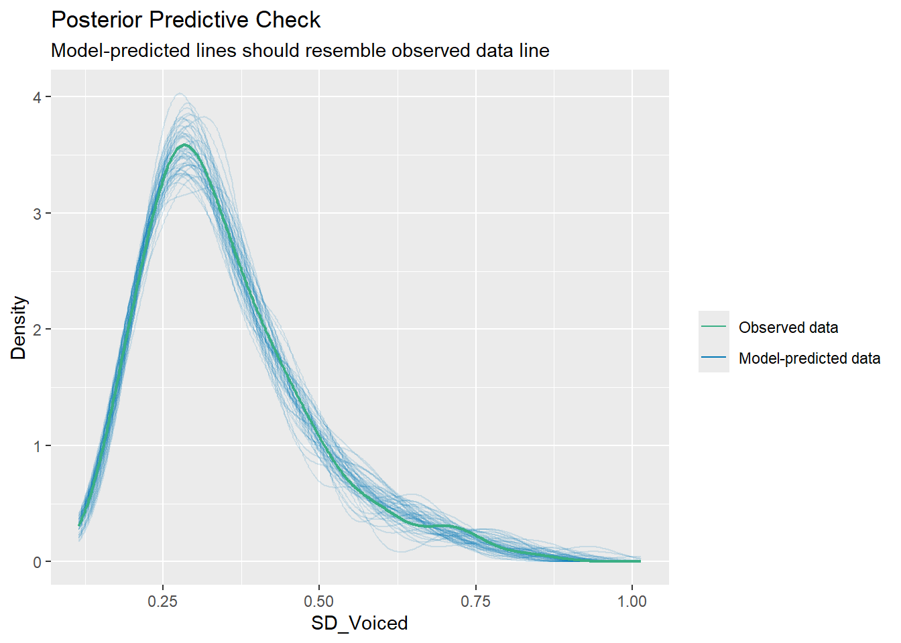
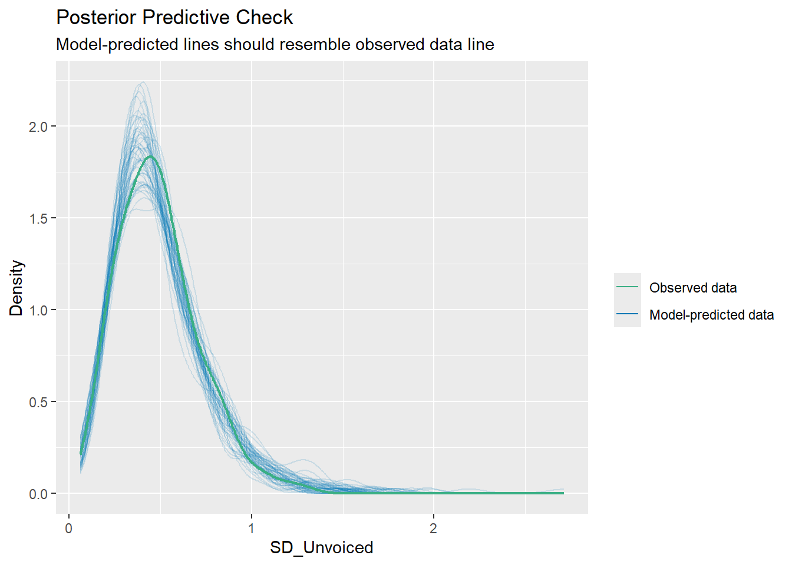